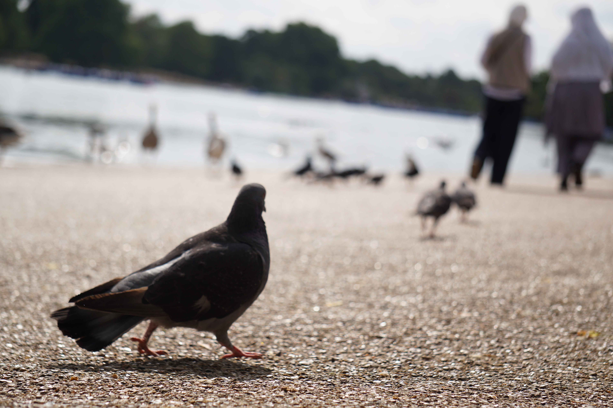
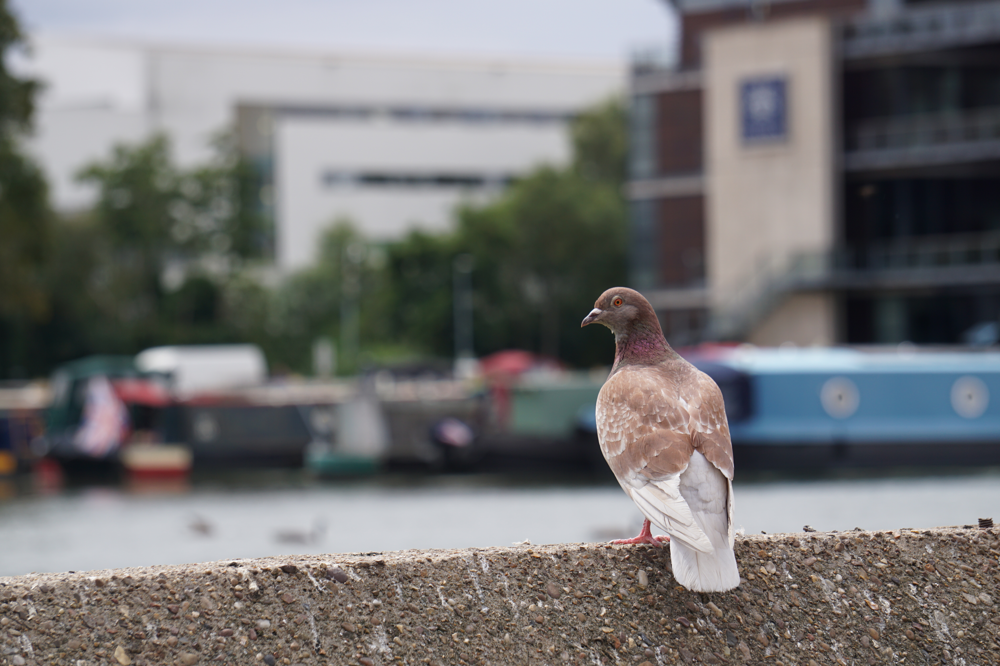
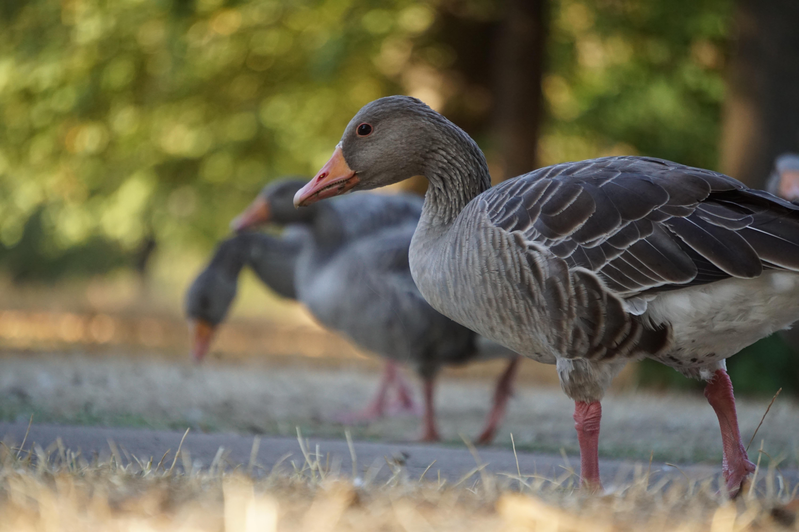
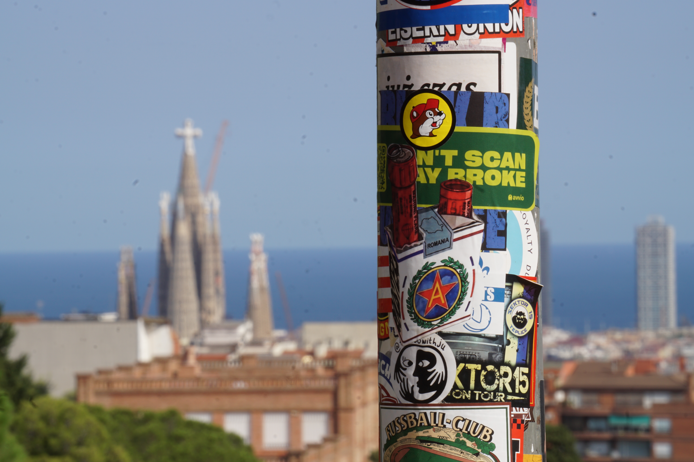
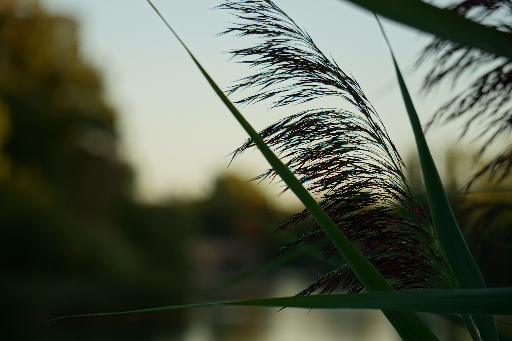
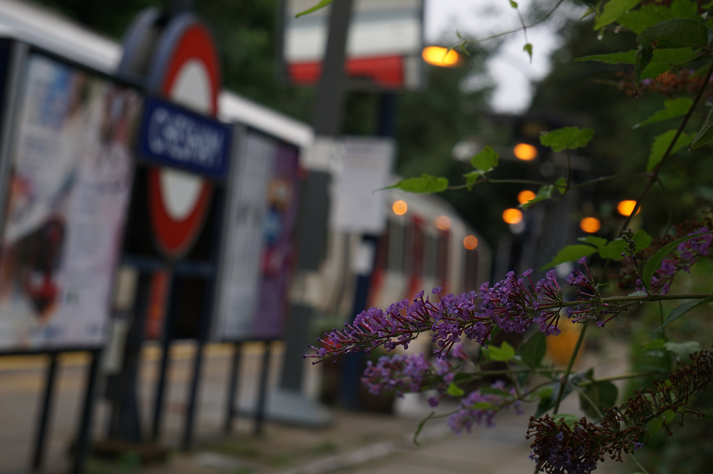
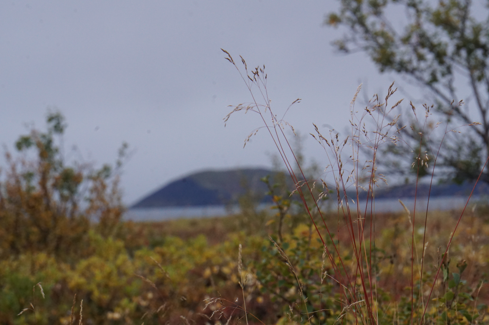
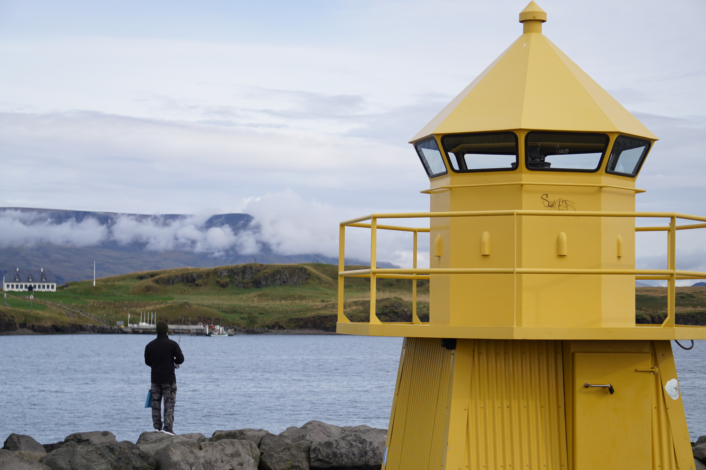
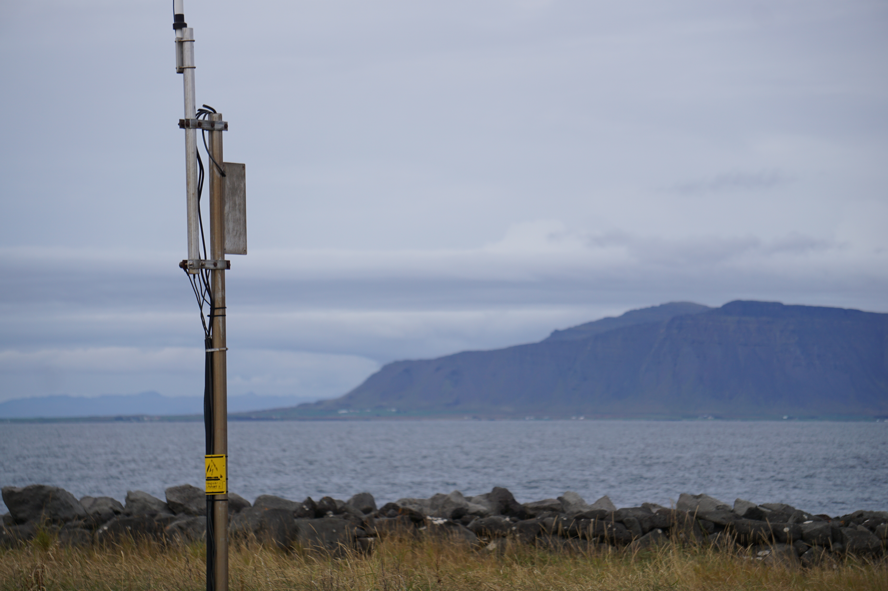

I am Daniel Rhodes, a public transport enthusiast.
I am currently studying Transport Planning, after having recently graduated from Electrical Engineering. I am curious, driven by understanding how things work, and by the challenge of designing better cities for everyone.
See my work Get in touchAbout me
After finishing my Transport Planning masters, I would like a career in urban planning, where street design particularly fascinates me. I am always looking for ways to improve our cities and our public transport networks.
Core skills
Technical
Communication
Personal
Projects
Analysing London's Train Network
This project combines urban planning questions with a numerical approach, coded in Python. It had three parts.
1. Data analysis
I analysed population density, population per borough, transport density and the number of stations per borough to find areas with large populations but poor access to public transport. This showed where improvements and new connections are most needed.
2. Graph theory
I modelled the rail network as a graph to measure how well stations connect to each other. There are several metrics for this, including betweenness centrality and average path length. I focused on k-edge connectivity.
I implemented k-edge augmentation. In simple terms, the algorithm finds every dead-end line and connects it to other lines, so that every station has at least k separate routes to every other station. If one line goes down, there is always a second route. The new connections are chosen to keep their total length as short as possible.
I tested several scenarios, including adding the Superloop, changing the number of zones, and including proposed lines such as the West London Orbital and the DLR extension to Thamesmead. Some of the results are below.
| Scenario | k = 2 | k = 3 |
|---|---|---|
| Zones 1-6 | 37 links, 114 km | 298 links, 365 km |
| Zones 1-6 with Superloop | 38 links, 104 km | 297 links, 359 km |
| Zones 1-6 with proposed lines | 37 links, 107 km | 292 links, 355 km |
| Zones 1-6 with proposed lines and Superloop | 36 links, 96 km | 287 links, 345 km |
Adding the Superloop and the proposed lines reduces the amount of new track needed to connect the dead ends.
3. Random and targeted station removal
I tested how well the network withstands failures, both before and after augmentation. Random removal simulates incidents such as line failures, fires or animals on the tracks. Targeted removal takes out the best-connected stations first, simulating events such as targeted strike action. The augmented networks performed significantly better under both.
Overall, the project shows that even small increases in connectivity can greatly improve a network's resilience.
Creating a Chess Engine for Fortress Positions
For my final year project at Imperial College London, I created a chess engine focused on fortress positions, where one side has a material advantage but cannot force a win. These positions are difficult for chess engines, which can easily miss a move such as a sacrifice that looks bad at first but gives an advantage in the long run.
The engine works in three stages:
1. Exhaustive search
The engine searches every possible line for the first few moves (3 to 7, adjustable in the interface). This ensures that no breakthrough move, such as a sacrifice or other counter-intuitive move, is missed, and that promising lines are not pruned away too early.
2. Further evaluation
From each position found, the engine runs an alpha-beta pruning search to find the most promising lines, and tracks how the evaluation changes as the search goes deeper. If the evaluation stays flat, a fortress is assumed. If it keeps rising, a breakthrough is assumed. These lines are then passed to the final stage.
3. Heuristic analysis
If a breakthrough is found, the engine uses heuristics adapted from Stockfish, such as material advantage, piece activity and tactics, to find a winning line. If not, it falls back on fortress heuristics that I wrote myself, and holds the draw.
The project was written entirely in C++. The report and poster below give more detail.
Work Experience
Product Design & Production
Northern CNC · September 2023
This role required a mix of skills, carrying out a variety of activities. It included things like manual handiwork, operating laser cutters and mechanical saws safely, admin and organisational tasks, and assembling products. This involved lots of attention to detail, problem solving and technical skills.
Teaching Assistant
Callerton Academy · June 2023
Here I did a week placement as a teaching assistant at a local middle school. We had to help the kids with their work, answer their questions, carry out tasks given by the teachers and conduct ourselves in a professional environment.
Instore Team Member
Domino's Pizza · August 2021 - December 2022
In this role I was required to make the pizzas, take customers' orders, clean at the end of the night, and carry out other tasks as required by my manager. This required lots of teamwork, and working under time pressure.
Charity Fundraising
National Citizenship Service · Summer 2021
I participated in a group fundraising activity over two weeks in the summer to raise money for our chosen charity, Mind. In total we raised over £1000 in the two weeks!
Piano Accompanist
Local Choir · September 2019 - March 2020
I worked for a few months playing piano to accompany a local choir. This involved learning a lot of pieces in a short time, and my work culminated in a successful concert.
Education
MSc Transport Planning (ongoing)
University of Westminster · 2026 - 2027
I am particularly looking forward to our module on Streets, Places and Active Transport, as it will teach us much about how to design more liveable and attractive places for everyone. I am also looking forward to Land Use, Planning and Transport, as I am keen to learn more about the field of Urban Planning.
BEng Electrical and Electronic Engineering
Imperial College London · 2023 - 2026
Achieved an Upper Second Class Honours.
There were many technical modules that required extensive use of programming and mathematical
skills. My favourite module was Biomedical Electronics, as it put into application many of the
theoretical things we had learnt earlier in the degree, including uses for analogue circuits and
mathmatical skills.
I also took part in two group projects that required working well in a team, writing reports, and
meeting strict deadlines.
A levels
Gosforth Academy · 2021 - 2023
A*, A*, A*, A in Maths, Further Maths, Physics and Music respectively.
Music Qualifications
ABRSM
Distinction in my ARSM diploma, along with a distinction in grade 8 Piano, Clarinet and Music Theory.
Photography
In my free time, I like to travel to different parts of London and do photography at or near each of the
tube stations. I also do lots of photography when I travel around Europe. My photos consist mostly of
birds (especially pigeons), architecture, and landscapes.
A long term project of mine is to visit every tube station in London, and post photography of the
station itself, along with the area around it. I put this on my Instagram page.









You can find more of my work below.
More of my best work! (Google Photos folder) My Instagram accountContact
I am open to opportunities and conversations. The best way to reach me is by email at dan1234rhodes@gmail.com.
LinkedInGitHub